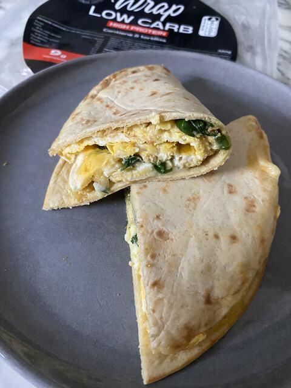

Recepta · Esmorzar · 15 min aprox.
Truita exprés per emportar
Prepara truita exprés per emportar amb Wrap Low Carb: una recepta molt senzilla que tindràs a punt en uns 15 minuts. Porta 1 ou, formatge mozzarella ratllat i espinacs frescos, i és perfecta per a un esmorzar o un brunch. Wrap Low Carb aporta 18 g de proteïna per cada 100 g.
4 ingredients3 passos15 min aprox.
 Feta ambWrap Low Carb320 g · 8 truites de 40 gVeure producte
Feta ambWrap Low Carb320 g · 8 truites de 40 gVeure producteIngredients
- 1 ou
- Formatge mozzarella ratllat
- Espinacs frescos
- 1 Wrap Low Carb
Informació nutricionalMenjar ràpid ric en proteïna, ideal per emportar
Preparació
- 01Escalfar una paella amb oli i batre-hi l’ou directament
- 02Afegir-hi la mozzarella i els espinacs
- 03Col·locar el wrap a sobre i coure 1 minut més